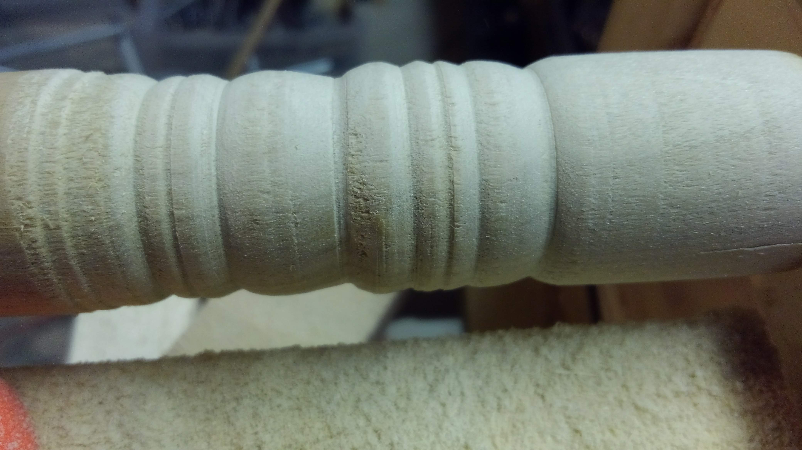
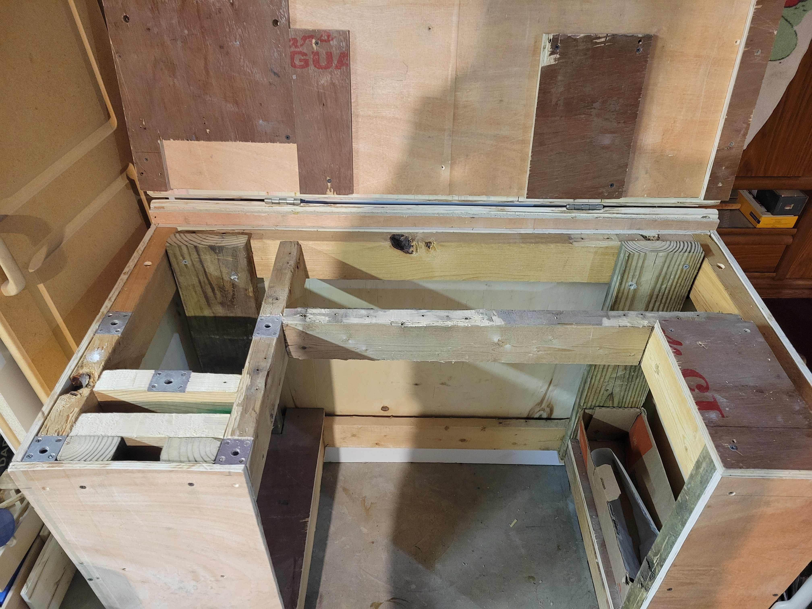

I was inspired to try building a hobby wood lathe when I acquired a 3/4 HP utility motor. It is capable of turning small parts and separates from its rolling base, which can also be used as a workbench.
-
Hobby Wood Lathe
(Winter 2019-Summer 2019)The lathe
-
Building the Lathe
I started by making a design in Google Sketchup. The motor powers a shaft with interchangible tools. It slides along a set of tubes to accomodate different size pulleys. The tailstock slides along another tube and is secured with a cam.
Lathe design in Google Sketchup (Top) and the lathe, partially built (Bottom)
-
Preliminary Testing
After setting up a makeshift toolrest, I tried shaping a test piece. It cut, but with a truly unnaceptable level of tearout.
First test
After bringing the toolrest closer and sharpening my dull chisel, I was satisfied with my new results. The piece still had some tearout, but with the setup I had, I was amazed it worked as well as it did.
- 
Second test
-
Designing & Building the Base
At this point, I had a semi-functional lathe, but nothing for it to rest on during use. I was also beginning to realize this project was going to take up a lot of space when it was finally done.
My solution was a multi-purpose rolling base. The lathe securely bolts into the base during use, but when removed, a tabletop, permanently attached by a hinge at the back, converts the stand into a useful work surface.
5 nuts are held captive in the base with through holes on the surface. This allowed me to attach various tools, including my vise, drill press and bench grinder to the surface when desired. All of my mounted tools were attached to 3/4" pieces of plywood with the same hole pattern, allowing me to easily mount them at various locations in the shop.
Base design with lathe mounted (Top) and base design configured as a work surface (Bottom)
With a functioning stand, I clad everything in plywood, to make it safer, protect the workings from debris, and to make it a bit more sightly.
The cart rolls on four locking casters, and features storage underneath for tools. The top panel is hinged, allowing acess to the motor when needed.
Lathe on stand, unclad (Top) and lathe on stand, clad in plywood (Bottom)
-
Finishing Touches
At this point, the lathe was almost done, but not quite ready to safely use.
I made a toolrest which adjusts along both horizonal axes. This lets the lathe accomodate for pieces of varying length and cross section.
The toolrest
I added the hinged work surface. It converts the stand into a very useful rolling workbench and hangs off the back when the lathe is installed.
- 
The work surface provides much needed project space in the shop when the lathe is not in use
Last but not least I made some additional headstock tools for different types of work pieces.
Additional headstock tools